Gash é o líder da príncipal organização que cuida das expedições de Dovelion: A Ashes. Ele cuida das expediçõese direciona diretamente os afiliados de tal organização. Ele é o chefe dos protagonistas, ele se importa muito com todos, principalmente o Komi, que possue a tal mascará antiga.Fiquem tranquilos, ele não tem nenhuma outra intenção.
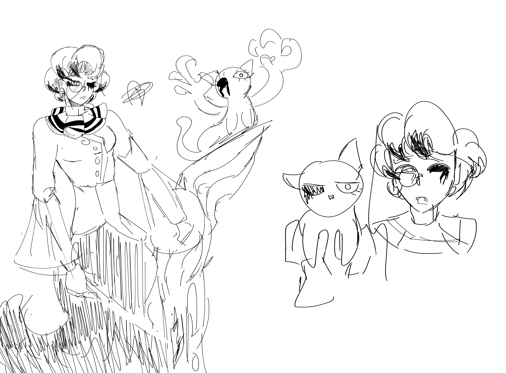
Ashe Roaring
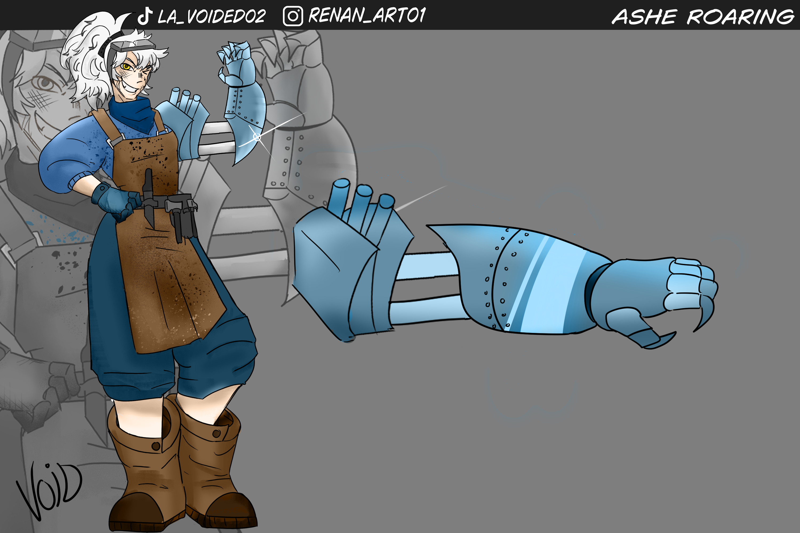
Void: Eu amei cada desenho que você fez pra mim ou dos meus personagems, sem falar que todos estão ótimos, o primeiro tem detalhes sutis, seja no fundo ou na personagem. O segundo é maravilhoso, traz exatamente a estética que eu queria entregar pra Ashe. O ultimo é impecável, você transforma tudo que toca em beleza da mais pura e incomparável.Ashe é uma mulher alta e forte, sempre com uma postura firme e confiante, ela tem os cabelos brancos e usa um avental de artesão, tendo um braço mêcanico , usando botas grandes e um visor repousado no topo da cabeça. Ela é confiente e acha que consegue lidar com tudo sozinha
Erwin Amor da Liz
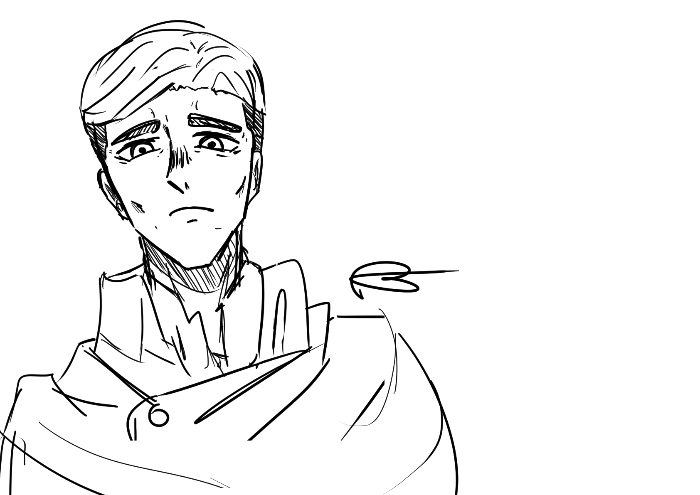
Eu admiro muito o Erwin, pois se que ele foi um apoi pra você, as vezes me inspiro nele pra poder te deixar mais feliz ainda. Você e seus gostos me impressionam, e eu amo ver você feliz, e agradeço ao Erwin por ter de deixado feliz, mesmo quando eu não via.
Artes da "Queda dos heróis"
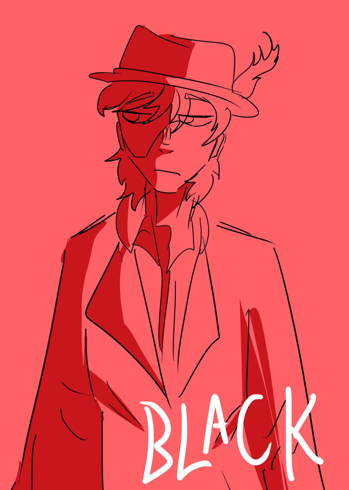
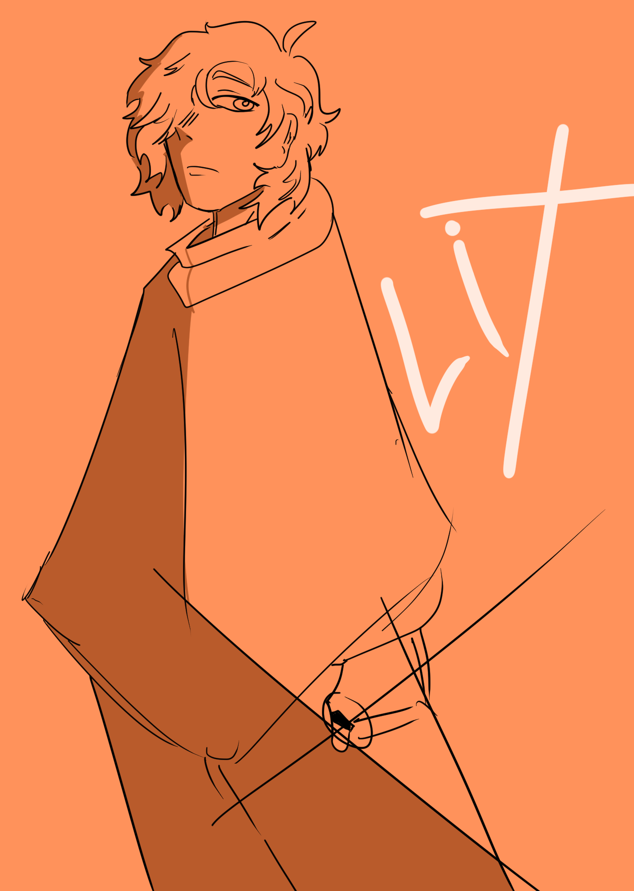
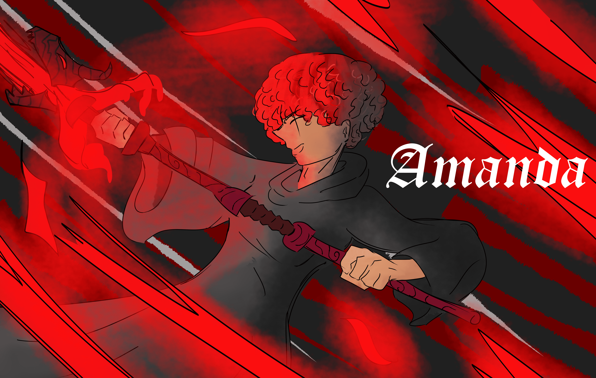
Artes Conceituais
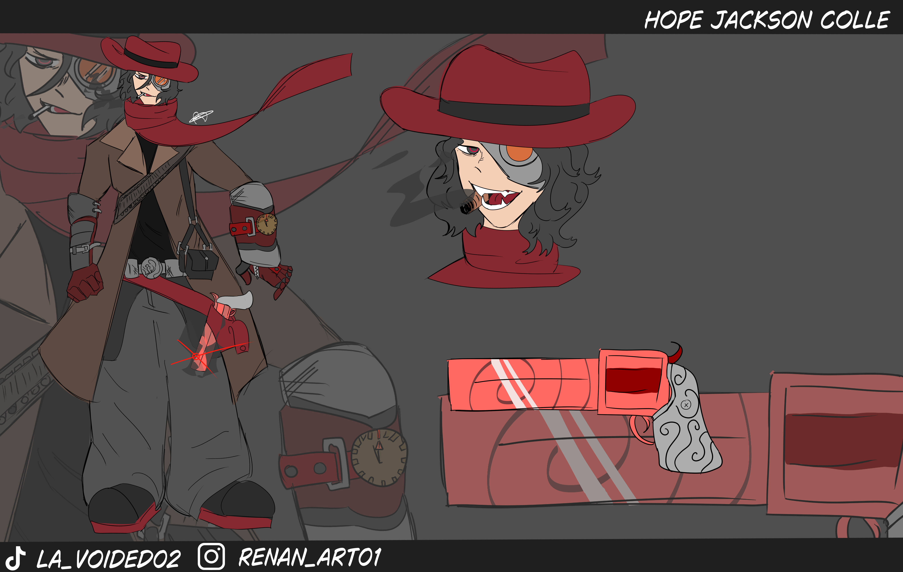
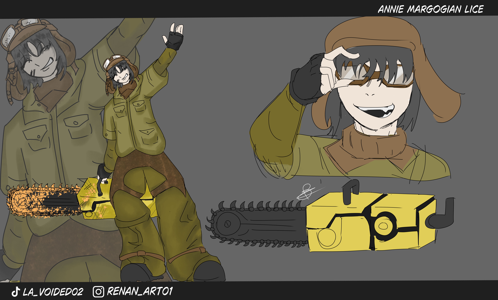
Essa é a Annie. Ela é de uma história minha onde um apocalipse causado por um deus raivoso amaldiçoou toda a terra, mandando um dragão feito de raizes que vê, ouve, e muito provavélmente, sabe de tudo. Ela é uma menina autêntica e usa da sua motosserra para matar raizés vivas, além de usar as propias como combustivél.
Concept "Filhote da Pomba"
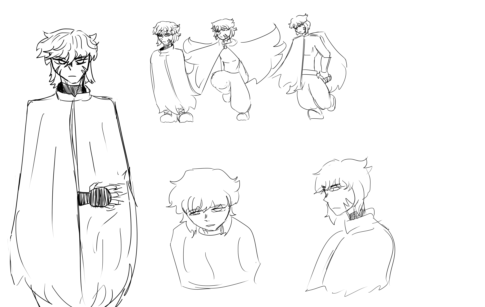
Esse é Dove, a cria da pomba, no começo do jogo, el* não sabe de nada, a unica coisa pe andar e pular, mas coisas basicas como falar, ou escrever são (no inico do jogo) complexas demais pra el*. No jogo, ele será chamado de aventureiro, explorador, cavaleiro e até mesmo de pássaro.
Concept Animação
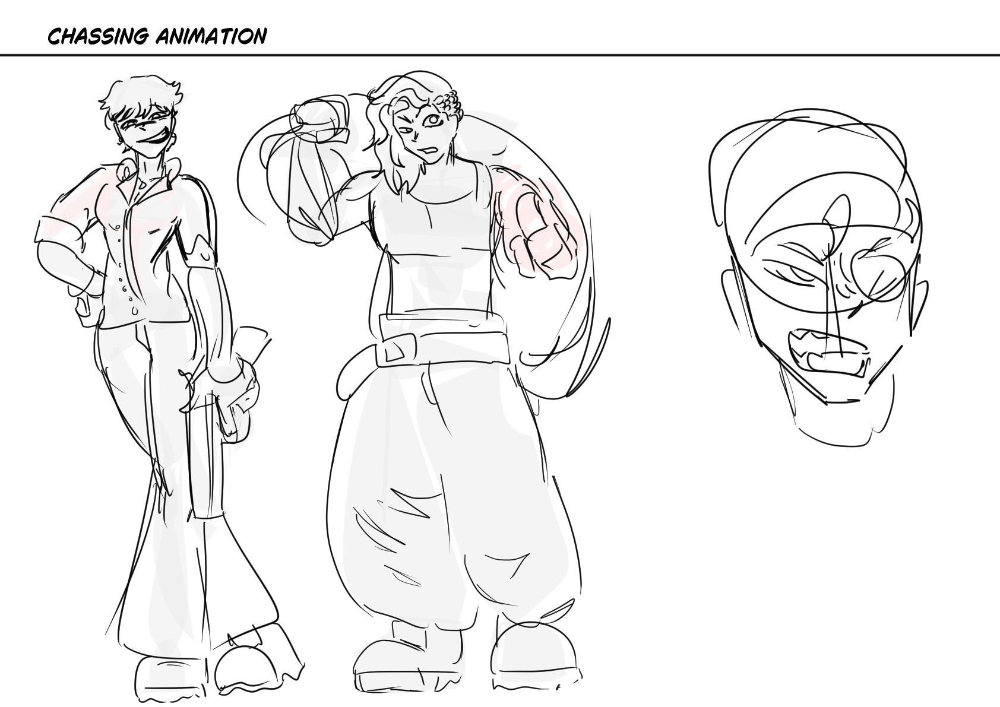
Esses desings são de uma animação que estava planejando fazer, onde esses dois roubaram um banco e agora estão fugindo da policia. O homem grande é o mais rígido, ele segue o plano as cegas e se irrita muito fácil com o comportamento da sua parceira, que pelo contrário dele, é guiada pela ganância e poder.
Artes Gerais
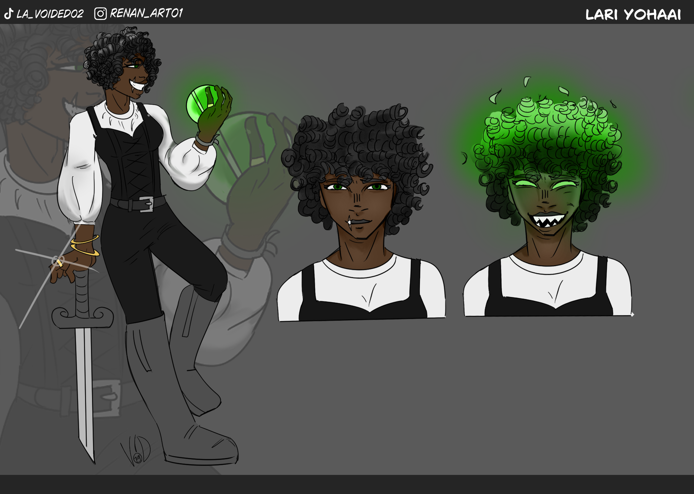
Concepts do projeto Double Dragon Tower
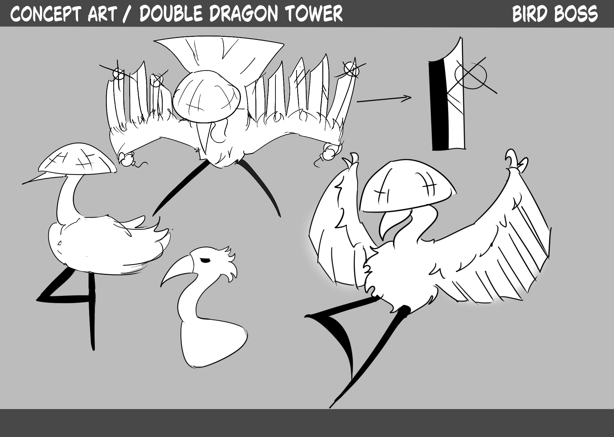
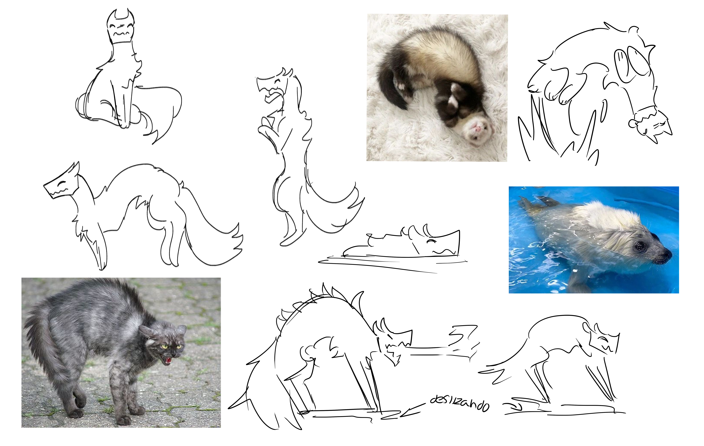
Um dos primeiros desings do Blue
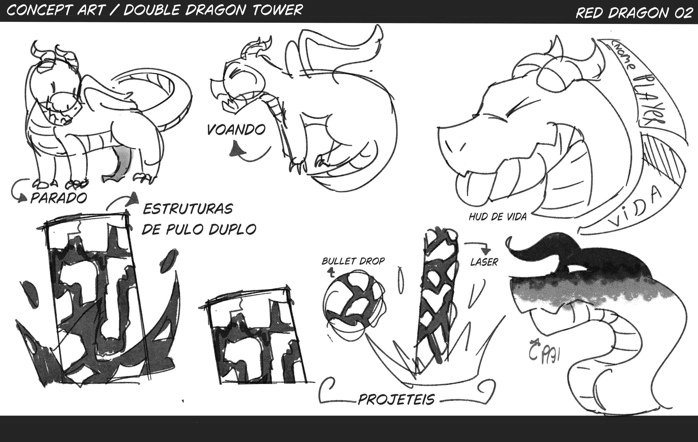
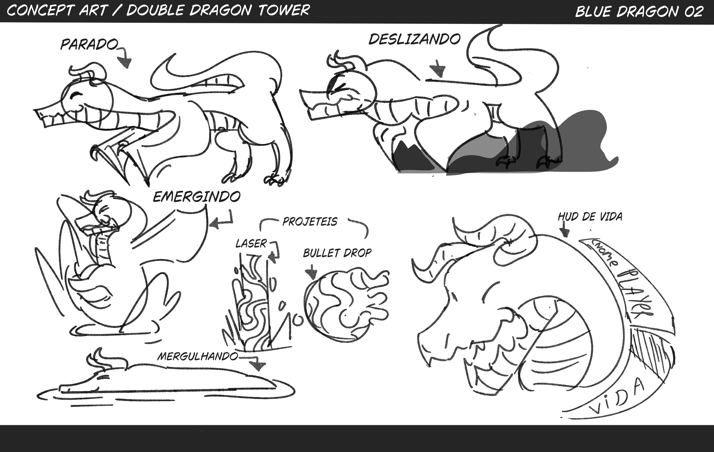
Esses sãos os desings do projeto que eu e o Reobe estamos fazendo, eu to cuidando de todas as partes artisticas, A imagems ao lado é um dos personagens jogavéis.